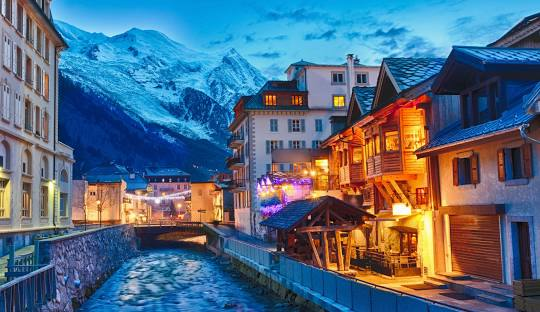
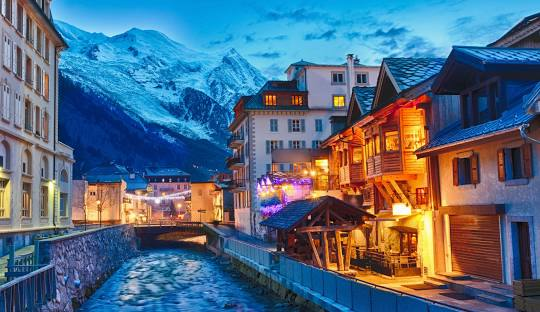

TOURIST SPOT
CHAMONIX
• Chamonix-Mont-Blanc (usually shortened to Chamonix) is a resort area near the junction of France, Switzerland and Italy.
• At the base of Mont Blanc, the highest summit in the Alps, it's renowned for its skiing. Year-round, cable cars take visitors up to several nearby peaks with panoramic views, including Aiguille du Midi above town, and Pointe Helbronner, across vast glacier fields on the Italian border.
 
